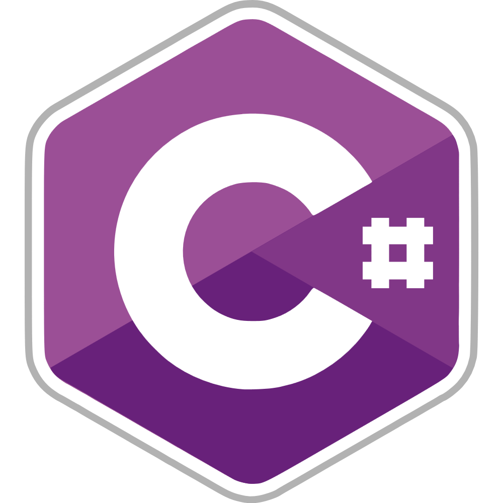
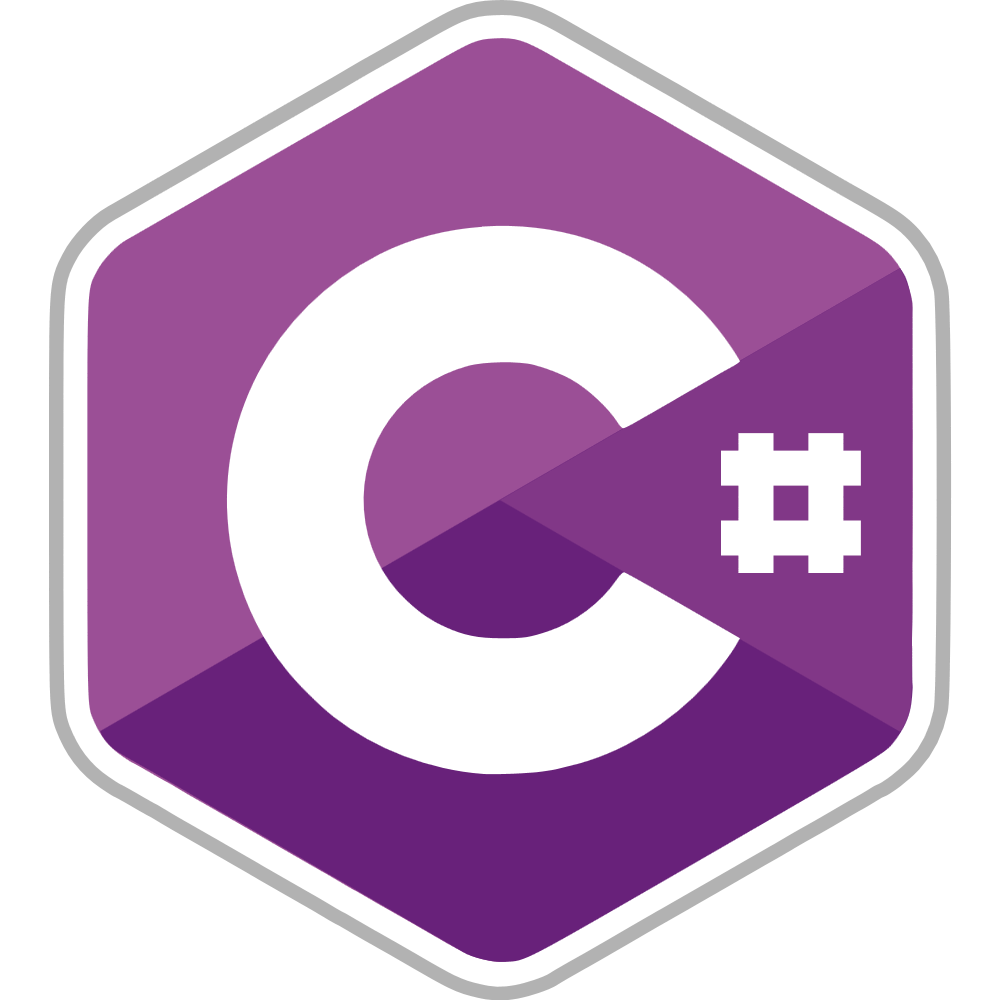

Bonjour.
La façon la plus sincère de me présenter est pour moi de vous raconter comment à été réalisé ce portfolio. J'ai passé une ou deux nuits à le coder tranquillement dans une ambiance euphorique, c'est à dire à base de rap Russe dont vous pouvez écouter un son sur la page principale. Ce qu'il faut retenir, c'est que je suis passionné, et que j'ai des goûts musicaux divers et très variés.
Mais surtout de la pa$$ion.
Plus sérieusement, je suis actuellement en recherche d'alternance pour 2 ans. Je cherche avant tout une équipe formatrice et des technologies que j'apprécie (python) pour exprimer mon plein potentiel et devenir expert en IA et en Deep Learning.
Je n'ai pas attendu pour commencer à le devenir, néanmoins je pense qu'il sera tout de même plus facile d'atteindre ce but à vos côté, je suis donc bien évidement disponible pour toutes questions ou entretiens.
Au plaisir d'échanger avec vous,
Alexandre.
 


1 an d'Alternance + 3 stages
2 BTS SIO + 1 Titre CDA
10+ Projets personnels
10+ passions
5+ langages maîtrisé
21 ans de créativité
Nekfeu
Audio Visuel
Code
Dessin
Skateboard
Borderlands
Guitare
Enseigner